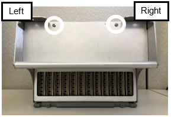
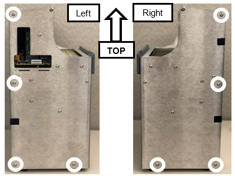

Thermocycler Heatsink Thermistor Removal and Replacement
Parts and Materials Required
- Bench Pads
- Panther Tool Kit
- Thermistor Cable
 Cable ties with screw holes
Cable ties with screw holes

Time Required
- 45 minutes for Thermistor Replacement
- 7 hours, 15 minutes with PQ Performance Qualification
Procedure
- Remove the Thermocycler from the Panther Fusion System.
- Place the Thermocycler on a clean, flat work surface and remove the two screws located on the top of the Thermocycler.

- Remove and save the 8 screws shown below. There are 4 screws on the left and 4 screws on the right.

- Remove the rear of the housing.
- Unplug the 2 fan cables and the 2 thermistor cables from the top circuit board.

Note— The Thermistors are labeled Temp1 and Temp2 on the circuit board. - Route the cables towards the fans through the notch on the right of the Thermocycler.
Note— Take note of the cable routing for reassembly. - Remove the 2 screws from each side of the Thermocycler and save for reassembly. These screws secure the fan bracket to the housing.
- Place the Thermocycler fan side up.
- Lift the gray and pink ribbon cable to make room for the fan bracket to slide upwards.
- Slowly pull up on the two fans to remove the fan bracket. Then set the bracket aside.
Note— Remember the orientation of the cover, and make sure to not pinch the cables on the left side of the fan bracket. - You will now see the Thermistors located within the large heatsink.
- The Black cables are the Thermistors.
- The Red cables are heat elements and do not need to be removed for this procedure.
- Remove the four screws shown below. Save these screws for reassembly.
- Slide the two yellow guides down and keep for reassembly.
- Cut the zip ties and discard.
- Remove the two thermistors by pulling up on the black cables located to the left of the screw holes.
- Install the two new Thermistors by feeding the white tip and plastic sleeve into the Thermistor slots.
- Zip tie the two wires together with the zip tie included in the kit.
Note— Refer to the images below for zip tie orientation. - Secure the Thermistor and Heat Element.
- Insert the screw into the yellow guide.
- Slide the yellow guide into position with the wires in the slots.
- Secure the yellow guide with the screw.
- Screw the zip tie onto the housing.
- Route the four cables through the notch in the top left of the housing.
Note— Route the cables under the gray and pink ribbon cable. - Plug the Thermistor cables into the circuit board.
Note— Use the image below to see where the cables need to be routed. - Carefully Slide the Fan Bracket back into the housing making sure that the fiber optic cables fit in the fan bracket slots.
Note— Make sure that the cables are not pinched in the corner notch. - Route the right fan cable to the circuit board.
- Route the left fan cable to the circuit board plug on the right.
- Route the gray and pink ribbon cable through the notch.
- Screw the fan plate into the housing using the 4 longer screws.
- Reattach the rear housing.
- Screw the top two screws into the rear of the housing.
- Reinstall the Thermocycler in the Fusion.


Verification
- Power on the Panther System and PC.
- Load firmware to the new Thermocycler module.
- Teach the Vial Robot to the Thermocycler module.
- Initialize the Thermocycler, wait 5 minutes and verify that the Heatsink Sensor Templates are between 35°C and 65°C.
Note— If the temperatures are 0°C or over 100°C, then the Thermistors were not installed correctly or need to be replaced. - Perform a Sidecar Pipettor OQ Test.
- 5 Cycles
- Check Cap & Vial only (uncheck the DiTi checkbox)
- Check the Report, Initialize, and Shutter checkboxes
- Replace the Cap & Vial Tray used in the Sidecar Pipettor OQ Test.
 button at the top of the page to send feedback, comments, or change requests.
button at the top of the page to send feedback, comments, or change requests.